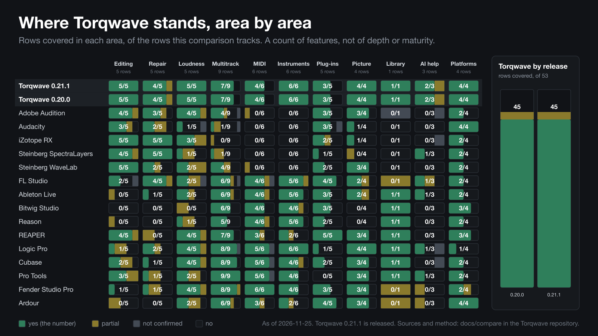

Edit it.
Design it.
Produce it.
An audio editor and a full DAW in one free open-source app. Zero telemetry, zero tracking, no account, no subscription.
36 built-in FX & instruments
48/53 matrix (+1 new)
Zero telemetry & tracking

Bring your kits
& soundbanks.
Clean-room import for NI Maschine, Akai MPC, SoundFont 2, SFZ & Battery 4 — samples stay in place.
Maschine Kits & MIDI Drop
Clean-room .mxgrp/.mxsnd import, Drum Synths, pad FX & 1-click track pattern drop
Akai MPC & SoundFont 2
Import .xpm Drum & Keygroup kits plus multi-preset .sf2 banks in Sampler

4 new live FX
in the rack.
Hilbert Frequency Shifter, Shimmer Delay, 24-band Vocoder & STFT Spectral Freeze.
Hilbert SSB Frequency Shifter
Granular Shimmer Delay
24-Band Vocoder (Chord / SC)
STFT Spectral Freeze & Blur

Grand-Staff Score
& 1-Click UX.
Dedicated Score / Notation window (Option-S) with treble + bass staff & MusicXML 3.1. Plus a redesigned 1-click Instrument Track layout and clean Window menu.
Window > Score (Option-S)
MusicXML 3.1 export
1-Click instrument window
Option-I from anywhere

9 Oscillators.
4 LFOs. 24 Slots.
16-node Curve LFOs, built-in Arpeggiator, 4-scene Evolve morphing, and Decrypt patch matching.
3,685 factory + Complex patches
Decrypt audio-to-patch engine
100% bit-identical on prior patches
CLAP 1.2 + VST3 + AU + LV2

48 of 53 rows.
Open & honest.
Documented against 15 editors and DAWs — listing every gap as plainly as what ships.

2,818 automated checks
Apple Silicon + Intel Rosetta
Headless CI Win & Linux
Zero telemetry.
Open source.
No account.
Spectral audio editor, multitrack DAW, 9-osc wavetable synth, SF2/SFZ/MPC sampler and 64-pad Maschine-ready drum machine — 100% offline-first.
→Zero telemetry, zero tracking, no phone-home
→macOS (Universal), Windows & Linux · AGPL-3.0
→Hear 1,243 built-in clips before downloading
bobclawblaw.github.io/torqwave